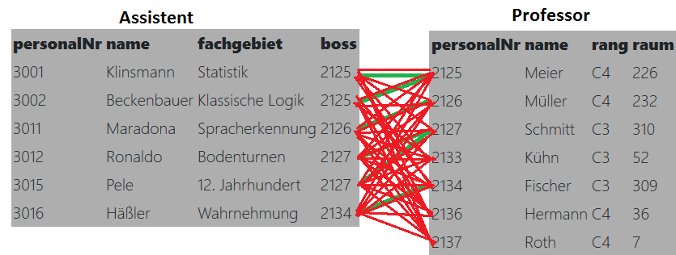

Was passiert, wenn ich per SQL 2 Tabellen abfrage und vergesse, diese irgendwie miteinander zu verknüpfen?
Das erste was du dir höchstwahrscheinlich denkst: "Och hab ich viele Daten bekommen". Aber diese Daten sind falsch.
Das System wird erstmal versuchen, jeden Professor mit jeden Assistenten miteinander zu verbinden, ohne darauf zu achten, ob das Sinn ergibt. Visualisiert sieht das chaotisch aus, genauso auch die Anzahl der Einträge.

Wenn man dann dieses Chaos aufräumen will, macht man einen Join(AttributA = AttributB). Nun fallen alle Einträge weg, die diese Bedingung nicht mehr erfüllen.(klinsmann hat bossnr 2125, ist verbunden mit Professor Müller, PersonalNr 2126.
2125 = 2126 ist falsch, dieser Eintrag verschwindet.
klinsmann hat bossnr 2125, ist vebrunden mit Professor Meier, personalNr 2125
2125 = 2125 ist richtig, dieser Eintrag bleibt